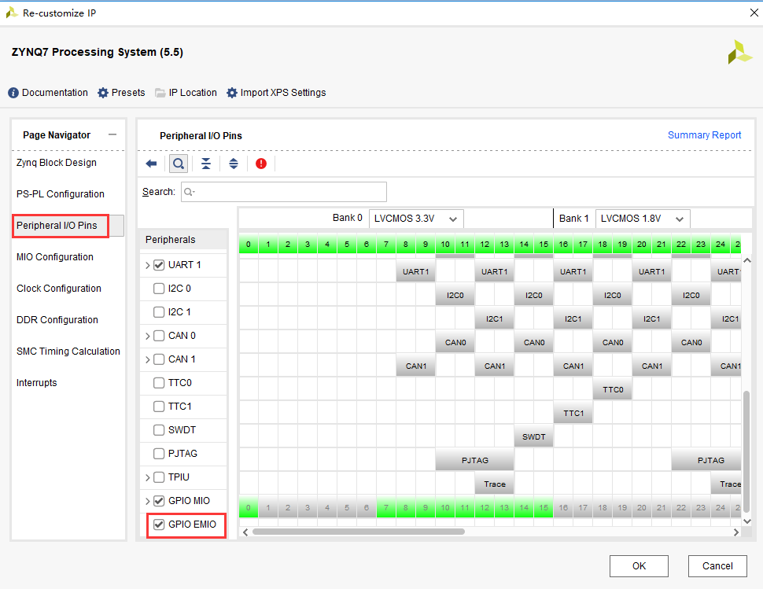
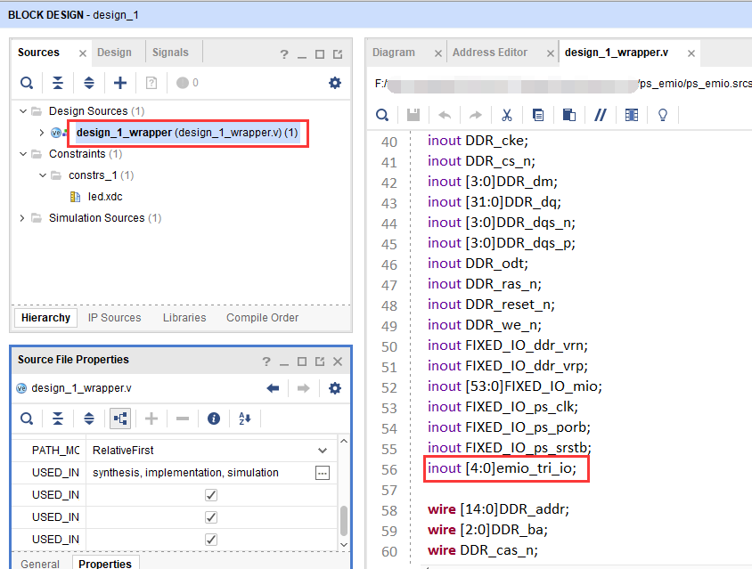

FPGA片内ROM读写测试实验#
实验Vivado工程为“rom_test”。
FPGA本身是SRAM架构的，断电之后，程序就消失，那么如何利用FPGA实现一个ROM呢，我们可以利用FPGA内部的RAM资源实现ROM，但不是真正意义上的ROM，而是每次上电都会把初始化的值先写入RAM。本实验将为大家介绍如何使用FPGA内部的ROM以及程序对该ROM的数据读操作。
实验原理#
Xilinx在VIVADO里为我们已经提供了ROM的IP核, 我们只需通过IP核例化一个ROM，根据ROM的读时序来读取ROM中存储的数据。实验中会通过VIVADO集成的在线逻辑分析仪ila，我们可以观察ROM的读时序和从ROM中读取的数据。
程序设计#
创建ROM初始化文件#
既然是ROM，那么我们就必须提前给它准备好数据，然后在FPGA实际运行时，我们直接读取这些ROM中预存储好的数据就行。Xilinx FPGA的片内ROM支持初始化数据配置。如下图所示，我们可以创建一个名为rom_init.coe的文件，注意后缀一定是“.coe”，前面的名称当然可以随意起。

ROM初始化文件的内容格式很简单, 如下图所示。第一行为定义数据格式, 16代表ROM的数据格式为16进制。从第3行开始到第34行，是这个32*8bit大小ROM的初始化数据。每行数字后面用逗号，最后一行数字结束用分号。
rom_init.coe编写完成后保存一下, 接下去我们开始设计和配置ROM IP核。
添加ROM IP核#
在添加ROM IP之前先新建一个rom_test的工程, 然后在工程中添加ROM IP，方法如下：
点击下图中IP Catalog，在右侧弹出的界面中搜索rom，找到Block Memory Generator,双击打开。
将Component Name改为rom_ip,在Basic栏目下，将Memory Type改为Single Prot ROM。
切换到Port A Options栏目下，将ROM位宽Port A Width改为8，将ROM深度Port A Depth改为32，使能管脚Enable Port Type改为Always，并取消Primitives Output Register
切换到Other Options栏目下，勾选Load Init File，点击Browse，选中之前制作好的.coe文件。

点击ok，点击Generate生成ip核。
ROM测试程序编写#
ROM的程序设计非常简单, 在程序中我们只要每个时钟改变ROM的地址, ROM就会输出当前地址的内部存储数据，例化ila，用于观察地址和数据的变化。ROM IP的实例化及程序设计如下:
`timescale 1ns / 1ps
module rom_test(
input sys_clk, //50MHz时钟
input rst_n //复位，低电平有效
);
wire [7:0] rom_data; //ROM读出数据
reg [4:0] rom_addr; //ROM输入地址
//产生ROM地址读取数据
always @ (posedge sys_clk or negedge rst_n)
begin
if(!rst_n)
rom_addr <= 10'd0;
else
rom_addr <= rom_addr+1'b1;
end
//实例化ROM
rom_ip rom_ip_inst
(
.clka (sys_clk ), //inoput clka
.addra (rom_addr ), //input [4:0] addra
.douta (rom_data ) //output [7:0] douta
);
//实例化逻辑分析仪
ila_0 ila_m0
(
.clk (sys_clk),
.probe0 (rom_addr),
.probe1 (rom_data)
);
endmodule
绑定引脚
##################Compress Bitstream############################
set_property BITSTREAM.GENERAL.COMPRESS TRUE [current_design]
create_clock -period 20 [get_ports sys_clk]
set_property IOSTANDARD LVCMOS33 [get_ports {sys_clk}]
set_property PACKAGE_PIN AB19 [get_ports {sys_clk}]
set_property IOSTANDARD LVCMOS25 [get_ports {rst_n}]
set_property PACKAGE_PIN AC12 [get_ports {rst_n}]
仿真#
仿真结果如下，符合预期，与RAM的读取数据一样，数据也是滞后于地址一个周期。
板上验证#
以地址0为触发条件，可以看到读取的数据与仿真一致。